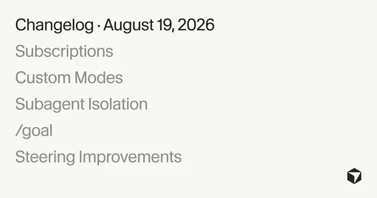

#cursor
Cursorがクラウドエージェントを強化、PR監視から長期目標まで自律開発を拡大

Cursorは2026年8月19日、クラウドエージェントとエージェント実行基盤である「Cursor harness」の改善を発表しました。今回の更新では、イベントを契機にエージェントが作業を再開する仕組みや、長期目標の維持、隔離環境で動くサブエージェントなどが追加され、人間が逐次指示しなくても開発タスクを継続できる方向へ大きく進んでいます。
記事で取り上げている点
- PRやSlackを監視する「サブスクリプション」
- スキルを常時適用する「カスタムモード」
- サブエージェントを専用VMで隔離
- `/goal`で完了条件を長期間維持
- 作業を止めずに追加指示
- 今後の展望
一次情報（出典） cursor.com